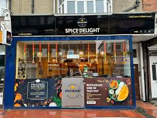

At Spice Delight, located in the heart of Cliftonville, Margate, we celebrate authentic Indian and Sri Lankan flavors that tantalize the senses. Our story is grounded in a passion for fresh, vibrant dishes crafted with care, from the crispy Sambar Vadai to the indulgent Nutella Dosa. We pride ourselves on offering a welcoming atmosphere and attentive service, creating an inviting space for families and food enthusiasts alike. Resonating with warmth and authenticity, Spice Delight is dedicated to providing an unforgettable culinary experience at reasonable prices, ensuring every visit feels like a delightful journey through the rich tapestry of South Asian cuisine.
Welcome to Spice Delight, an enticing culinary gem located at 182 Northdown Rd, Cliftonville, Margate. This restaurant invites you to savor the vibrant flavors of Indian and Sri Lankan cuisine, making it a must-visit for anyone who appreciates authentic dishes rich in spices and tradition. The atmosphere at Spice Delight is warm and inviting, complemented by a friendly staff dedicated to ensuring a delightful dining experience. As echoed in the reviews from satisfied patrons, the service is as remarkable as the food itself. One customer praises the knowledgeable staff who catered to special dietary needs, highlighting the restaurant's commitment to inclusivity and customer service. At Spice Delight, the menu is a celebration of delightful dishes. Start your meal with tantalizing Gobi 65 or crispy Onion Bhaji, showcasing the restaurant's knack for preparing crispy, flavorful starters that whet your appetite. For those seeking heartier options, the Chicken Chettinad and Kadai Chicken represent the pinnacle of Indian culinary tradition, each dish bursting with authentic flavors and spices. What truly sets Spice Delight apart is its appeal to families, particularly the little ones. The Nutella Dosa has quickly become a favorite, delighting children and adults alike with its sweet, chocolaty goodness. Customers like Nila TK rave about the perfect blend of flavors, emphasizing that dishes like Devilled Mutton and the must-try garlic butter naan are essential for a well-rounded dining experience. It's also worth noting that the prices at Spice Delight are remarkably reasonable, allowing guests to indulge without breaking the bank. A recent diner, Max Boxer, shared how they enjoyed a filling meal that included drinks, all valued at a mere £44. This combination of affordability and exquisite taste makes Spice Delight an extraordinary dining option. Overall, Spice Delight excels not just in food but in creating an atmosphere where guests feel at home. Whether you're drawn in by the authentic flavors or the friendly service, this restaurant is undoubtedly one of Margate's hidden treasures. Dont miss the chance to embark on a culinary journey that promises to be as delightful as its name suggests!